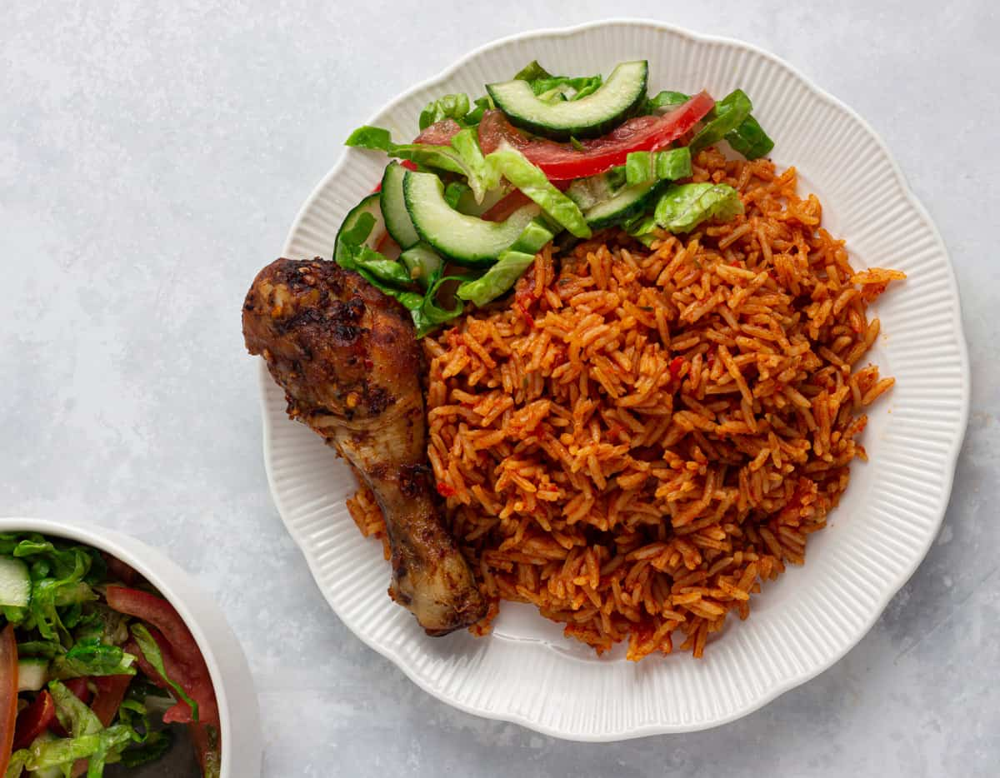

Jollof Rice

Classic Nigerian party Jollof rice
Classic Nigerian party Jollof rice combines a rich tomato-pepper stew base with long-grain parboiled or sella basmati rice, slow-cooked to absorb flavors and achieve a distinct smoky profile.
Ingedients
- Rice: 3 to 4 cups long-grain parboiled rice or sella basmati rice (rinsed until water runs clear)
-
Stew Base:
- 10 plum tomatoes (romas)
- 4 red bell peppers (tatashe)
- 3 to 4 scotch bonnet or habanero peppers (atarodo), adjusted to spice preference
- 2 to 3 large red onions (chopped)
- 300g tomato paste
- Garlic and ginger (blended into a mix)
-
Aromatics & Spices
- 1/2 cup neutral cooking oil (or peanut oil)
- 2 to 3 bay leaves
- 2 teaspoons dried thyme
- 2 teaspoons curry powder
- Chicken or beef bouillon / seasoning cubes (to taste)
- Salt and white pepper (to taste)
-
Liquid:
- 2 to 3 cups rich meat or chicken stock (plus extra water as needed)
-
Final Touch
- 2 to 3 tablespoons butter
- 1 sliced onion and 1 sliced fresh tomato (for steam-topping)
Preparatio steps
-
Blend and Reduce the Pepper Mix:
- Blend the plum tomatoes, red bell peppers, scotch bonnets, and a portion of the red onions until smooth.
- Pour the mixture into a pot and boil or simmer it down for 20 to 30 minutes until excess water evaporates.
-
Build the Stew Base:
- Heat the cooking oil in a large, heavy-bottomed pot over medium heat. Add chopped onions and fry until translucent.
- Add the tomato paste and fry for 10 to 15 minutes, stirring frequently, until it turns a deep, dark red and separates from the oil.
- Pour in the reduced tomato-pepper blend and fry together for another 10 minutes.
-
Season the Sauce:
- Stir in the curry powder, dried thyme, bay leaves, bouillon cubes, and salt.
- Add your meat or chicken stock and let the entire mixture simmer for 5 minutes. Scoop out a portion of this stew and set it aside for the final steaming step.
-
Add and Cook the Rice:
- Pour the washed, drained long-grain parboiled or sella basmati rice into the pot.
- Stir well so every grain is coated with the red stew. Ensure the liquid level sits just at or slightly above the rice level (add a splash of water or stock if it is too low).
- Cover the pot tightly with a layer of foil paper, then place the pot lid securely on top to trap the steam.
- Turn the heat down to low and cook undisturbed for 35 to 45 minutes.
-
Finish with Butter and Steam:
- Open the pot, scatter the butter, sliced onions, and sliced fresh tomatoes over the rice, and add back any reserved stew.
- Cover again for 5 minutes on very low heat to let the butter melt and infuse the grains.
- Fluff gently with a wooden spoon or spatula and serve warm.
Back to Home